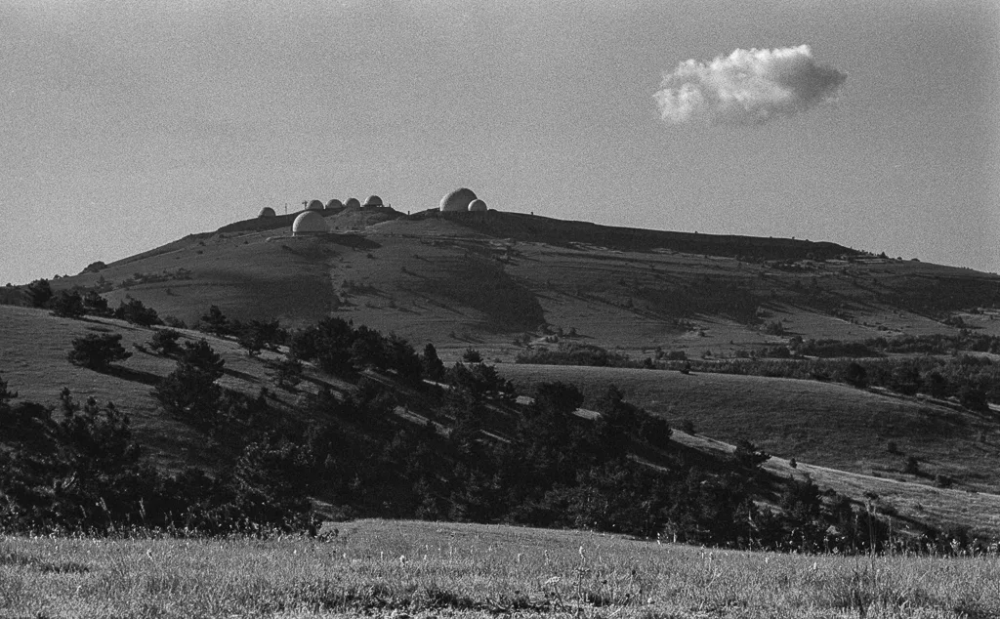
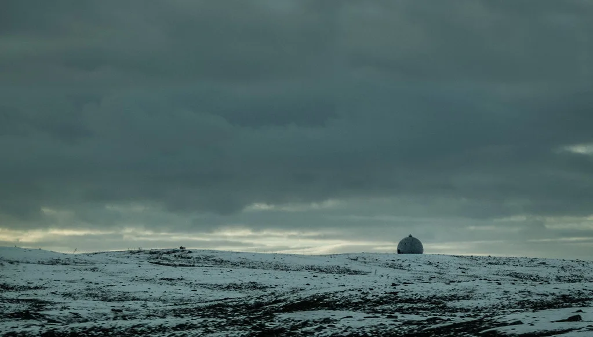

北, 원산서 동해로 탄도미사일 발사…올해 16번째, DMZ 지뢰폭발 12일 만
합동참모본부는 3일 오전 6시 30분쯤 북한 원산 일대에서 동해상으로 발사된 탄도미사일 1발을 포착했다고 밝혔다. 해당 미사일은 700㎞ 이상을 비행한 것으로 파악됐다. 합참은 발사 직후 한·미·일 간 관련 정보를 긴밀히 공유했으며, 추가 발사 가능성에 대비해 감시·경계 태세를 한층 강화했다고 설명했다. 아직 미사일의 세부 궤적과 종류에 대한 정밀 분석은 진행 중인 것으로 알려졌으며, 군 당국은 비행 거리와 고도 등 구체적인 제원을 추가로 공개할지 검토하고 있다.
이번 발사는 북한이 올해 들어 16번째로 감행한 탄도미사일 도발이다. 직전 발사는 지난달 20일로, 13일 만에 다시 무력시위에 나선 셈이다. 올해 북한의 미사일 발사 빈도는 예년과 비교해 뚜렷하게 잦아진 모습을 보이고 있으며, 한반도 안보 당국은 발사 간격이 점차 짧아지는 흐름에 주목하고 있다. 연초 이후 열 차례를 훌쩍 넘긴 발사 횟수는 북한이 무기 체계 고도화와 대외 압박이라는 두 가지 목적을 동시에 추구하고 있다는 분석에 힘을 더하고 있다.

특히 이번 발사는 북한 신임 국방장관이 판문점 공동경비구역 인근 지역을 방문한 지 하루 만에 이뤄져 그 배경에 관심이 쏠린다. 아울러 지난달 29일 합참이 DMZ 일대 폭발 사고를 북한의 지뢰 소행으로 결론 내리고 TNT·RDX 성분을 검출했다고 발표한 지 12일 만이라는 점도 공교롭다. 여기에 더해 김여정 노동당 부부장이 전날 대남 비난 메시지를 낸 직후 미사일이 발사됐다는 사실이 알려지면서, 일련의 사건들이 서로 연결된 신호일 수 있다는 분석이 나온다. 군 안팎에서는 이처럼 짧은 기간 안에 여러 도발성 사건이 겹친 사례가 드물다는 점을 들어, 북한이 의도적으로 긴장 국면을 조성하려는 것 아니냐는 해석도 제기된다.
군 당국은 이번 도발이 단순한 무기 시험을 넘어 복합적인 메시지를 담고 있을 가능성에 주목하고 있다. DMZ 지뢰 폭발의 책임 소재를 둘러싼 남북 간 긴장이 채 가라앉지 않은 상황에서, 대남 비난과 미사일 발사가 잇따라 이어진 만큼 당분간 추가 도발 가능성도 배제할 수 없다는 관측이 제기된다. 정부는 상황을 예의주시하며 필요한 대응 조치를 검토하고 있다는 입장을 밝혔다. 국방부 역시 접경 지역 경계 태세를 점검하며 만일의 상황에 대비하고 있다고 전했다.

한·미·일 3국은 이번 발사를 계기로 정보 공유 체계를 재점검하며 공조를 강화하고 있다. 특히 올해 들어 북한의 발사 빈도가 높아진 만큼, 3국은 탐지·추적 자산의 운용을 조정하고 상호 통보 절차를 신속화하는 방안을 논의 중인 것으로 전해졌다. 일본 정부 역시 자국 상공이나 인근 해역에 영향이 없는지 별도로 분석에 나선 상태다.
외교가에서는 이번 도발이 북한 내부 정치 일정이나 대외 협상 국면과 맞물려 있을 가능성도 거론된다. 다만 아직 북한 측의 공식 발표나 추가 설명이 나오지 않은 만큼, 정확한 발사 의도를 단정하기는 이르다는 신중론도 함께 나온다. 정부 당국은 향후 북한의 추가 동향을 지켜보며 한반도 안정을 위한 외교·안보적 대응을 이어갈 계획이라고 밝혔다.
국회 국방위원회 등에서는 이번 사태를 계기로 접경 지역 경계 체계 전반을 다시 점검해야 한다는 목소리도 나올 것으로 예상된다. 전문가들은 DMZ 지뢰 폭발과 미사일 발사가 같은 시기에 맞물린 만큼, 단순히 개별 사건으로 접근하기보다는 올 하반기 북한의 전반적인 대남·대외 전략 변화 속에서 종합적으로 평가할 필요가 있다고 조언한다.